UMass Boston
https://biol607.github.io/
First, Some New Technology
https://etherpad.wikimedia.org/p/607-intro-2018
This class will use collaborative note-taking
Research shows that this enhances learning!
It’s also a way to ask me a question during class
Second, Some Old Technology

- Green: Party on, Wayne
- Red: I fell off the understanding wagon
- Blue: Write a question/Other
And Now, A Pop Quiz!
Outline for Today
- What are we doing here?
- Who are we?
- How will this course work?
- A Philosophy of answering scientific questions with data
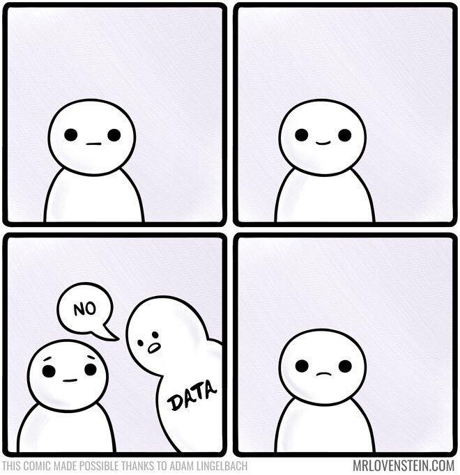
Computational
#------------
# Split Data into Train/Test
#------------
keeley_train <- keeley[1:80,]
keeley_test <- keeley[81:90,]
#------------
# Random Forest Models
#------------
rf1 <- randomForest(rich ~ cover + firesev +
hetero, data = keeley_train)
rf2 <- randomForest(cover ~ firesev + age +
abiotic + elev, data = keeley_train) Code Forces You to Be Explicit About Theory
Computational
#------------
# Split Data into Train/Test
#------------
keeley_train <- keeley[1:80,]
keeley_test <- keeley[81:90,]
#------------
# Random Forest Models
#------------
rf1 <- randomForest(rich ~ cover + firesev +
hetero, data = keeley_train)
rf2 <- randomForest(cover ~ firesev + age +
abiotic + elev, data = keeley_train) Coding is power
Computational
#------------
# Split Data into Train/Test
#------------
keeley_train <- keeley[1:80,]
keeley_test <- keeley[81:90,]
#------------
# Random Forest Models
#------------
rf1 <- randomForest(rich ~ cover + firesev +
hetero, data = keeley_train)
rf2 <- randomForest(cover ~ firesev + age +
abiotic + elev, data = keeley_train) Repeatable Research
Data (acquisition)
How do I get good data here?
Data (maintaince)

Analysis (philosophy)
Analysis (visual)
Analysis (model)
##
## Call:
## lm(formula = shoots ~ treatment.genotypes, data = eelgrass)
##
## Residuals:
## Min 1Q Median 3Q Max
## -27.473 -10.723 -1.299 8.955 35.701
##
## Coefficients:
## Estimate Std. Error t value Pr(>|t|)
## (Intercept) 30.664 5.324 5.760 2.73e-06 ***
## treatment.genotypes 4.635 1.401 3.308 0.00245 **
## ---
## Signif. codes: 0 '***' 0.001 '**' 0.01 '*' 0.05 '.' 0.1 ' ' 1
##
## Residual standard error: 16.39 on 30 degrees of freedom
## Multiple R-squared: 0.2672, Adjusted R-squared: 0.2428
## F-statistic: 10.94 on 1 and 30 DF, p-value: 0.002449for Biology
for Biology
SCIENCE FIRST!
What is your model(s)?
THEN decide on statistical approach
Can you get data to paramaterize that model?
How does biology inform your modeled results?
Avoiding The Replication Crisis

Course Goals
- Learn how to think about your research in a systematic way to design efficient observational & experimental studies.
- Understand how to get the most bang for your buck from your data.
- Make you effective collaborators with statisticians.
- Make you comfortable enough to learn and grow beyond this class.
Who are You?
Name
Lab
Brief research description
Why are you here?
Outline for Today
- What are we doing here?
- Who are we?
- How will this course work?
- A Philosophy of answering scientific questions with data
Lecture and Lab
- M/W Lecutre on Concepts
- Occasional Paper Discussion
- F Lab (which will cover some homework problems!)
Yes, Lectures are Coded
R Markdown sometimes with Reveal.jsReadings for Class: W&S
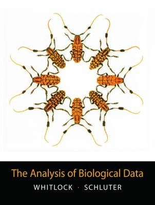
Whitlock, W.C. and Schluter, D. (2014) The Analysis of Biological Data, 2nd Edition.
http://whitlockschluter.zoology.ubc.ca/
Chapter 1 this week!
Readings for Class: Wickham & Grolemund
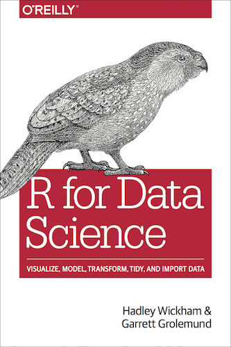
Grolemund, G., and Wickham, W. 2016. R for Data Science.
http://r4ds.had.co.nz
Quizes
Before and After Class
Measures understanding - and attendance!
Will drop lowest two
10% of your grade
Problem Sets
- 40% of your grade
- “Adapted”" from Whitlock and Schluter
- Will often require R
- Complete them using Rmarkdown
Midterm
Advanced problem set
Due Nov 2nd
20% of your grade
Final Project
- Topic of your choosing
- Your data, public data, any data!
- Make it dissertation relevant!
- If part of submitted manuscript, I will retroactively raise your grade
- Dates
- Proposal Due Oct 11th
- Presentations on Dec 14th
- Paper due Dec 18th (but earlier fine!)
- 30% of your grade
Extra Credit 1: Use Github

- This whole class is a github repo
- Having a github presence is becoming a real advantage
- So…. create a class repository!
- If you submit a link to your homework in a repo, +1 per homework!
- There will be a github tutorial outside of class hours
Extra Credit 2: Be Nate Silver (before the general election)
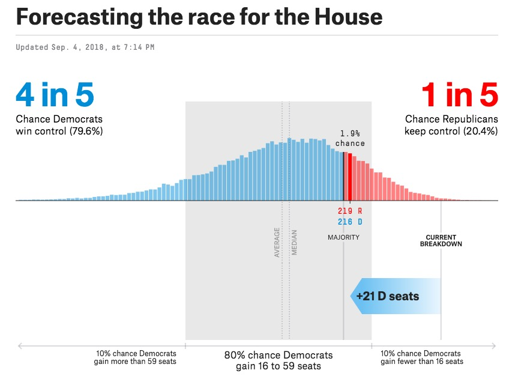
Extra Credit 2: Be Nate Silver (before the general election)
- 5 points for getting the correct answer
- 5 extra points for explicitly stating the confidence of your estimates
- 5 points for a clear explanation of the methodology
- 1 point for each thing you do beyond a weighted average of polls
Extra Credit 3: Livin’ La Vida Data Science
| 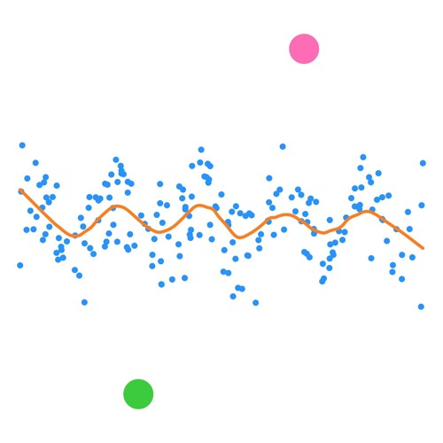 |  |
Extra Credit 3: Livin’ La Vida Data Science
- Check out http://www.r-bloggers.com/
- Listen to podcasts like https://itunes.apple.com/us/podcast/not-so-standard-deviations/
- Follow data science greats on Twitter (see https://twitter.com/jebyrnes/lists/stats-r-on-twitter)
- +1 point per cool thing you bring up in the beginning of each class
Extra Credit 4: Further Data Science at UMB
- +3 for joining the UMBRUG slack group and the Biol607 channel
- +5 for attending Stats Snack on Tuesdays in Science S4-6401
Outline for Today
- What are we doing here?
- Who are we?
- How will this course work?
- A Philosophy of answering scientific questions with data
How Biostats is Often Thought of
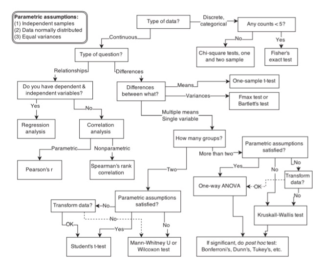
Our Philosophy
- What is your question?
- Conceive of a model of your system
- How much do you need to know to answer your question?
- What data do you need to parameterize your model of the world?
- Do you need an experiment?
- What breadth of observations do you need?
- Do you need an experiment?
- Fit your model of the world
- Query your model to answer your question
What is your question?
Conceive of a model of your system
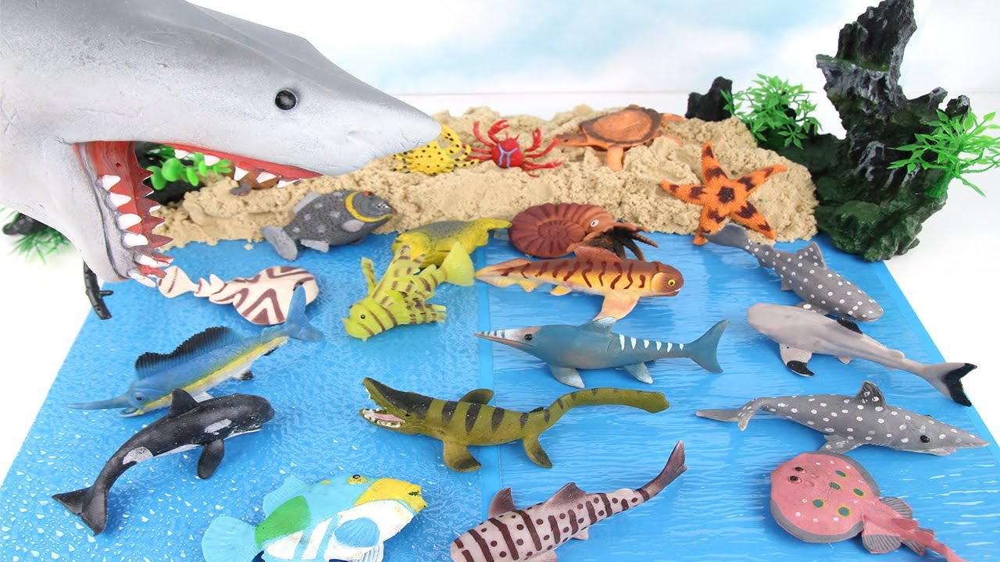
How much do you need to know to answer your question?
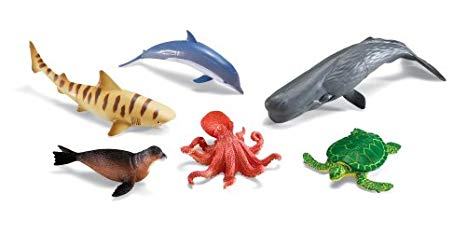
What data do you need to parameterize your model of the world?
Fit your model of the world
Query your model to answer your question
Our Approach to Data Analysis
Data from Reusch et al. 2005 PNAS
Start with a Question
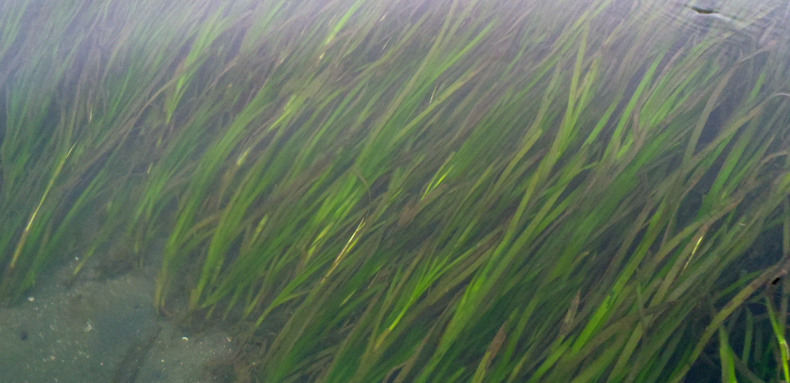
Does seagrass genetic diversity increase productivity?
Build an Understanding of the System
Literature
Observation
Disciplinary History
Conceive of a model of your system
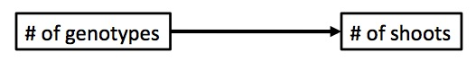
This is your DATA GENERATING PROCESSConceive of a model of your system
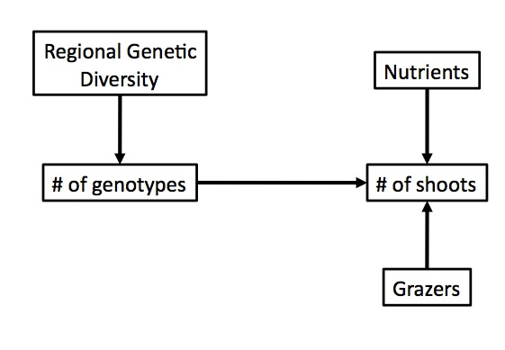
Big Picture DATA GENERATING PROCESSConceive of a model of your system
How much do you need to know to answer your question?
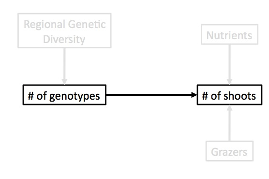
What can you isolate?What data do you need to parameterize your model of the world?
Genotype
Genotypes
Genotypes
Look at Your Data
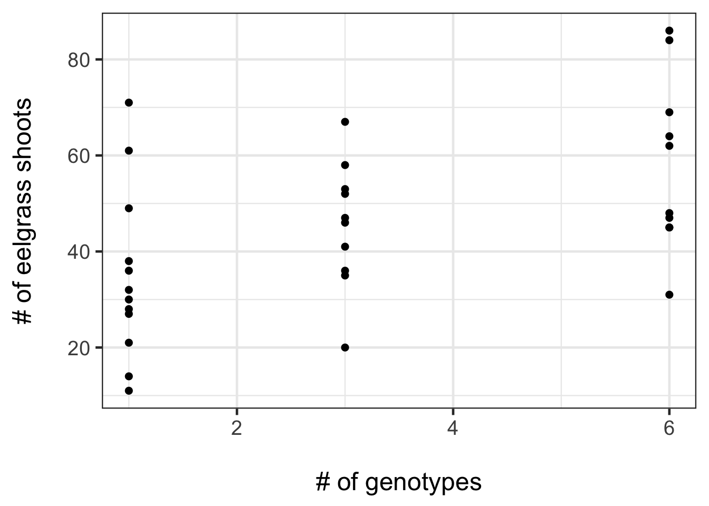Fit a model(s), chosen to suit data & error generating process!
Fit your model of the world & Query It
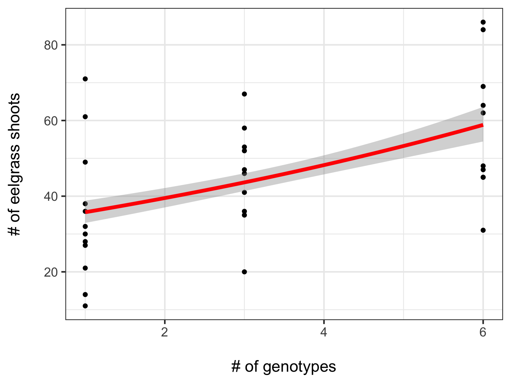
Build Open Reproducible Research
Many Methods of Sharing Data, Methods, and Results Beyond Publication
GitHub - public code repository
FigShare - share key figures, get a doi
Blog - open ‘notebook’
Dryad or Other Repository - post-publication data sharing